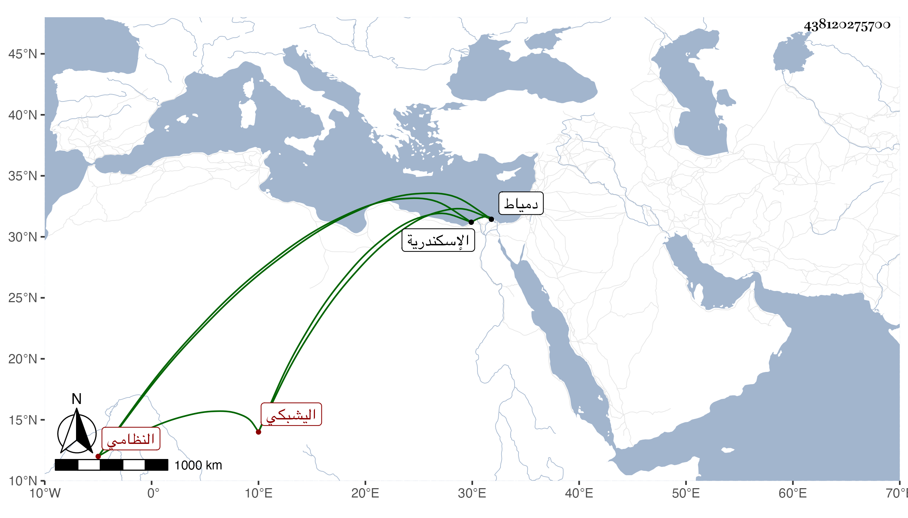

0902Sakhawi.DawLamic.ITO20230111-ara1.EIS1600.438120275700
Biography ID: 438120275700
315
محمد بن اركماس اليشبكي عضد الدين النظامي نسبة لنظام الحنفي لكونه ابن أخته . ولد سنة اثنتين وأربعين وثمانمائة ومات أبوه وهو صغير فرباه خاله مكافأة لأبيه أركماس فهو المربي لنظام وحفظ القرآن والشاطبيتين والمنار والكنز وألفية ابن ملك وغيرها فيما زعم ، وأنه عرض بعضها وهو ابن عشر على شيخنا وغيره واشتغل على ابن الديري وسيف الدين الزين قاسم في آخرين منهم خاله وكتب على يس ، وحج غير مرة منها في سنة إحدى وتسعين في البحر وجاور حتى رجع مع الموسم في أول التي تليها . ودخل دمياط واسكندرية وكتب بخطه الكثير لنفسه وغيره وجمع تذكرة في مجلات ، واختص بالشهابي بن العيني بعد أيامه ولذا قرره في خزن الكتب بمدرسة جده ثم فصله عنها ، واجنمع بي غير مرة وحضر بعض الدروس ، وهو لطيف الذات كثير الادب .
